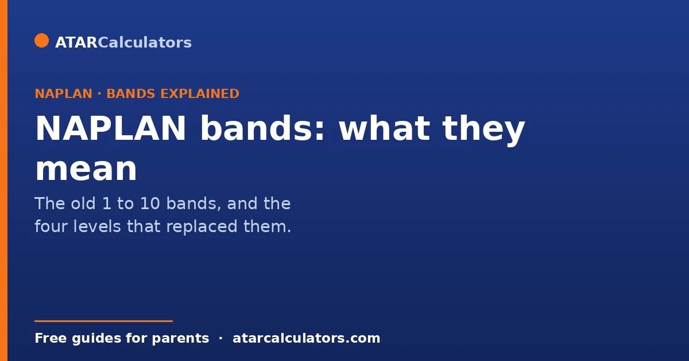
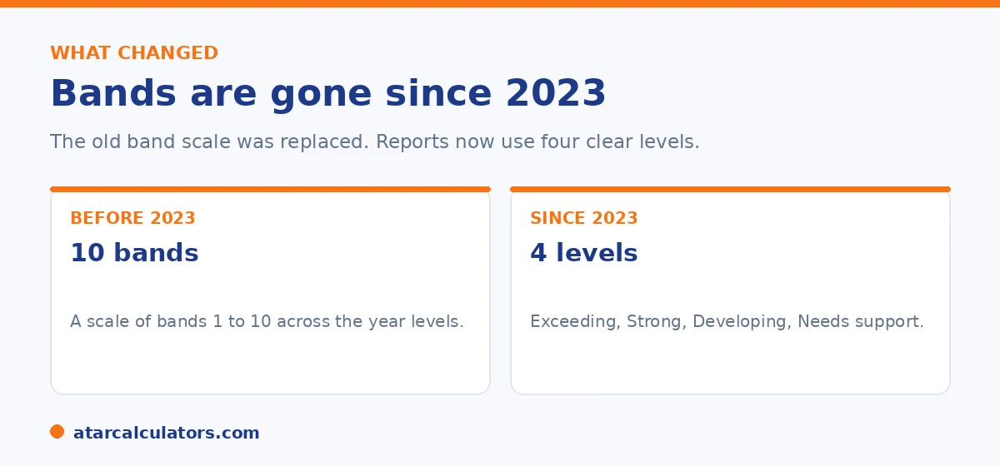

Here is the short version. NAPLAN used to report results on a scale of 10 bands, from Band 1 to Band 10. Each year level used a different set of bands. In 2023, that scale was replaced by four proficiency levels: Exceeding, Strong, Developing, and Needs additional support. If you have an older report, this guide explains what the bands meant. If you have a recent report, it explains the new levels.
Many parents still search for NAPLAN bands. That is because the band system ran for many years, and older reports still show it. If your child sat NAPLAN before 2023, you will see a band.
The band scale is no longer used. Since 2023, NAPLAN reports four levels instead. Both systems are explained below. To check a recent score, use our NAPLAN score calculator.
Key takeaways
- NAPLAN used a scale of 10 bands, from Band 1 to Band 10, until 2022.
- Each year level reported a different set of bands. A higher band meant higher achievement.
- In 2023, the bands were replaced by four levels: Exceeding, Strong, Developing, Needs additional support.
- There is no exact swap between a band and a level. The scales are different.
- Old band scores cannot be compared to results from 2023 onwards.
- If your report shows a band, it is from 2022 or earlier.
What changed in 2023
For years, NAPLAN reported results on a scale of 10 bands. Alongside the bands sat the National Minimum Standard, a line that marked the basic expected level. In 2023, that whole system was retired.

NAPLAN now reports four proficiency levels: Exceeding, Strong, Developing, and Needs additional support. The change was made to give parents a clearer picture, and to better identify children who need extra help. Because the systems are different, scores before 2023 cannot be compared to scores from 2023 onwards.
How the old band system worked
The 10 bands sat on one scale that ran across all year levels. A higher band meant a higher level of achievement. Band 10 was the top.
Each year level only reported a section of the scale. This is because younger and older students are at different stages. The bands shown for each year were roughly: Year 3 covered the lower bands, Year 5 a little higher, Year 7 higher again, and Year 9 the highest bands. So the same band could be a strong result for a younger year and a basic result for an older one. That is one reason the band number on its own was easy to misread.
What the National Minimum Standard was
The old reports also showed the National Minimum Standard. This was the band that marked the basic expected level for each year. A child above it was seen as meeting the minimum. A child below it was flagged as needing support.
The minimum standard was dropped for a reason. It set the bar low, and it could give the impression that a child was on track when they still needed help. The new Needs additional support level is designed to identify those children more clearly.
The four levels that replaced bands
Here is what the new levels mean. Exceeding is well above the expected level for the year. Strong is at or just above the expected level, and it is the goal for most children. Developing is below the expected level, with the basics in place. Needs additional support means extra help would close the gap.
Have a recent report and want to know what the score means?
Open the NAPLAN score calculator →For a full walk through of a current report, see our guide on reading the NAPLAN report. To understand how scores are worked out, see how NAPLAN is scored.
Do the old bands map to the new levels?
There is no exact one to one swap between a band and a level. The two systems use different scales and were set up in different ways, so you cannot simply turn a band into a level.
As a rough idea only, the lower part of the old scale lines up with Developing and Needs additional support. The upper part lines up with Strong and Exceeding. Treat that as a loose guide, not a conversion. If you want to judge a result, use the level on a current report rather than trying to translate an old band.
It is worth understanding why an exact mapping is impossible. This is because it stops you drawing false conclusions from an old result. The two systems were built on different logic. The old ten-band scale used the same band numbers across year levels. So a band told you little on its own without knowing the year it applied to. And the bands were spread to describe a wide distribution rather than to mark a clear "expected" point. The four proficiency levels were designed around exactly that missing idea. They name where a child is expected to be for their year (Strong), what is above it (Exceeding), and what is below (Developing, then Needs additional support). Because one system was distribution-based and the other is standard-based, there is no clean formula converting a band into a level. The boundaries were drawn for different purposes. The rough correspondence, low bands towards the lower levels and high bands towards Strong and Exceeding, is genuinely only a general orientation. And it varies by year level. So a mid-band result in Year 3 does not translate to the same level as the same band in Year 9. The sensible way to handle this is to stop trying to convert. If you are looking at an older report, read the band in the context of its year and take a broad sense of where the child sat. For any recent result, judge it directly by the proficiency level. That is designed to tell you plainly whether your child is meeting the standard for their year.
Why the new wording is clearer
The move from band numbers to four plain levels was meant to make results easier to read. A word like Strong tells you more at a glance than a band number ever did.
If you are handed an older report that still uses bands, remember the two systems do not map exactly. Read each report by the system it was built on, and focus on the current levels going forward.
Common questions
What were the NAPLAN bands?
NAPLAN used a scale of 10 bands, from Band 1 to Band 10, until 2022. A higher band meant higher achievement. Each year level reported a different set of bands.
Why did NAPLAN get rid of bands?
In 2023, NAPLAN replaced the bands with four levels to give parents a clearer picture and to better identify children who need extra help. The old minimum standard set the bar too low.
What replaced NAPLAN bands?
Four proficiency levels replaced the bands: Exceeding, Strong, Developing, and Needs additional support. Strong is the level expected for the year.
Can I convert a band to a level?
No. There is no exact swap. The two systems use different scales. As a rough idea, lower bands sit near Developing and Needs additional support, while higher bands sit near Strong and Exceeding.
What was the National Minimum Standard?
It was a line on the old band scale that marked the basic expected level for each year. It was dropped in 2023 because it set the bar low and could miss children who needed support.
My report shows a band. Is it old?
Yes. If your child's report shows a band from 1 to 10, it is from 2022 or earlier. Reports from 2023 onwards show one of the four levels instead.
Can I compare an old band score to a new result?
No. Scores from 2023 onwards cannot be compared to results from 2008 to 2022, because the scale and the system changed.
See what a recent score means
Enter a NAPLAN score and year level to see the level and where it sits. Free, and no signup.
Open the NAPLAN score calculator →Related guides
This guide is general information for parents, not formal advice. NAPLAN reporting can change, so always check the official details on the National Assessment Program (NAP) site, and talk to your child's teacher. Reviewed by the ATARCalculators Editorial Team.